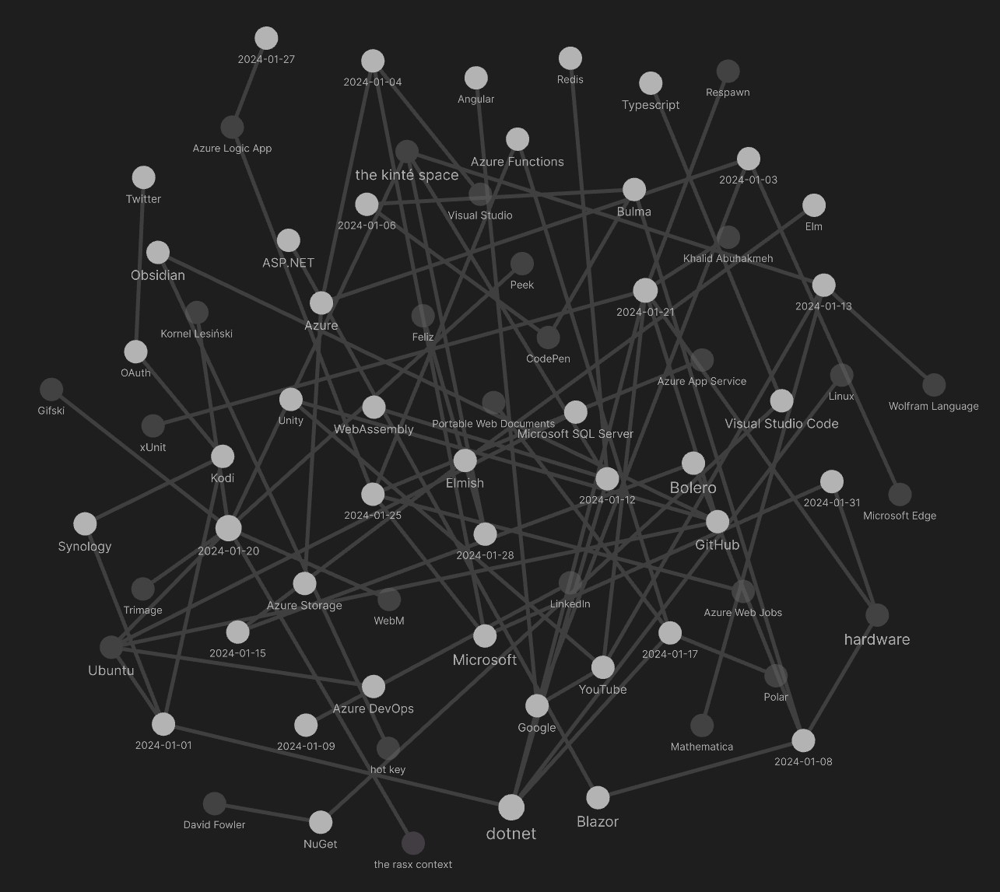

studio status report: 2024-01
month 01 of 2024 was about releasing Songhay.Modules.Bolero and SonghayCore
The only piece left to complete that other ‘half’ needed to completely replace http://kintespace.com/player.html is Songhay.Player.YouTuberelease 6.3.0 📦🚀 [[GitHub](https://github.com/users/BryanWilhite/projects/25)]. This surge in progress meansSonghay.Modules.Bolero` release 6.4.0 📦🚀 [GitHub] is complete.
The completion of SonghayCore 📦✨ release 6.1.0” [GitHub] is also significant but not directly related to that other ‘half’ needed to completely replace http://kintespace.com/player.html. Again, I am trying to be in several places at once 😐 This SonghayCore move is a combination of general maintenance and groundwork underneath the Songhay Publications stack. The following projects that need to be completed for Songhay Publications depend on SonghayCore:
Completion of these projects should lead directly into the “proposed project items” mentioned at the end of this document (see “sketching out development projects” below). Success here will reignite Studio work on Songhay Publications instead of writing software in a vacuum and learning yet another thing about Microsoft 😐
My Obsidian graph for month 01 reveals just how much Microsoft dominates my “second brain”:

Selected Obsidian notes for month 01:
browser tabs go to sleep 🛌 or throttle for various reasons
First of all, there are no events related to tabs going to “sleep” which implies there is no accepted standard for tab sleeping/throttling.
[[Microsoft Edge]] has a “sleeping tabs” feature that diverges from the [[Google]] “tab discarding” feature.
The throttling related to inactive tabs largely applies to the use of setTimeout:
To reduce the load (and associated battery usage) from background tabs, browsers will enforce a minimum timeout delay in inactive tabs. It may also be waived if a page is playing sound using a Web Audio API
AudioContext.The specifics of this are browser-dependent:
- Firefox Desktop and Chrome both have a minimum timeout of 1 second for inactive tabs.
- Firefox for Android has a minimum timeout of 15 minutes for inactive tabs and may unload them entirely.
- Firefox does not throttle inactive tabs if the tab contains an
AudioContext.
when I still do not understand [[Azure]] deployment slots after reading “Azure Functions deployment slots” then I can fill with dread 😐 #to-do
“Azure Functions deployment slots” explains the theory clearly:
Azure Functions deployment slots allow your function app to run different instances called slots. Slots are different environments exposed via a publicly available endpoint. One app instance is always mapped to the production slot, and you can swap instances assigned to a slot on demand. Function apps running in a Consumption plan have a single extra slot for staging. You can obtain more staging slots by running your app in a Premium plan or Dedicated (App Service) plan. For more information, see Service limits.
The understanding problem begins with not know the details around this sentence:
One app instance is always mapped to the production slot, and you can swap instances assigned to a slot on demand.
the docs for section is a great intro to semantic HTML
The usage notes for sectionis a great intro to semantic HTML [🔗 Wikipedia ]:
As mentioned above,
<section>is a generic sectioning element, and should only be used if there isn't a more specific element to represent it. As an example, a navigation menu should be wrapped in a<nav>element, but a list of search results or a map display and its controls don't have specific elements, and could be put inside a<section>.Also consider these cases:
- If the contents of the element represent a standalone, atomic unit of content that makes sense syndicated as a standalone piece (e.g. a blog post or blog comment, or a newspaper article), the
<article>element would be a better choice.- If the contents represent useful tangential information that works alongside the main content, but is not directly part of it (like related links, or an author bio), use an
<aside>.- If the contents represent the main content area of a document, use
<main>.- If you are only using the element as a styling wrapper, use a
<div>instead.To reiterate, each
<section>should be identified, typically by including a heading (h1 - h6 element) as a child of the<section>element, wherever possible. See below for examples of where you might see a<section>without a heading.—“Usage notes”
Flippantly, section usage for fictional prose would demarcate chapters:
<html>
<head>
<title>My Prose</title>
</head>
<body>
<nav>
<a href="#1">Chapter One</a>
<a href="#2">Chapter Two</a>
<a href="#3">Chapter Three</a>
</nav>
<main>
<h1>My Title</h1>
<section id="1">
<h2>Chapter One</h2>
<p>Who is Peter Pan?</p>
</section>
<section id="2">
<h2>Chapter Two</h2>
<p>Peter Pan has conflict.</p>
</section>
<section id="3">
<h2>Chapter Three</h2>
<p>Peter Pan ends the conflict.</p>
</section>
</main>
</body>
</html>
I am most embarrassed about my historical ignorance of the main element 😐
For Blog posts, we are guided to replace section with article:
<html>
<head>
<title>My Blog</title>
</head>
<body>
<nav>
<a href="#1">Post One</a>
<a href="#2">Post Two</a>
<a href="#3">Post Three</a>
</nav>
<aside>
This is a call to action for the Blog!
</aside>
<main>
<h1>My Blog Title</h1>
<article id="1">
<h2>Post One</h2>
<h3>Day One</h3>
</article>
<article id="2">
<h2>Post Two</h2>
<h3>Day Seven</h3>
</article>
<article id="3">
<h2>Post Three</h2>
<h3>Day Twenty</h3>
</article>
</main>
</body>
</html>
…of course, lengthy Blog posts can be broken down into section elements.
an ex-[[Microsoft]] employee’s take on logging
In “The Subtle Arts of Logging and Testing,” Rob Conery reports:
Over the years I've created my own personal strategy which feels verbose, at first, but has helped many times:
- Log any application error (in addition to runtime), and keep them focused.
- Log any state change to any model (as
info).- Log any
statuschange, if a model has astatusfield, as awarning.- Don't
try/catchat the controller level unless no choice, only in service classes.- Know what you're
catching!
semantic HTML and [[Bulma]] layout
Now that I respect the basics of semantic HTML, let us see how [[Bulma]] plays along:
<html>
<head>
<title>My Bulma Interface</title>
</head>
<body class="has-navbar-fixed-top">
<svg><!-- icons --></svg>
<nav class="navbar"><!-- web nav --></nav>
<main class="container is-fluid">
<div class="columns">
<div class="column is-3">
<!-- .tile of site nav -->
</div>
<div class="column">
<!-- .tile of main UX -->
</div>
</div>
</main>
<footer class="footer">
<!-- fluid .container of .columns -->
</footer>
</body>
</html>
This layout declares the following concepts:
- centralized SVG icons
- two categories of navigation: Web navigation and site navigation
We also see the [[Bulma]]-influenced approach to layout:
- declare a
div.container - declare child
div.columsblock ofdiv.column - declare a
.tile‘stack’ inside adiv.column
[[Bulma]] tiles layout [📖 docs ] is the most complex 😐 …I have started with a [[CodePen]] to help me understand what is going on with these “intricate 2-dimensional layouts.”
semantic HTML, [[Bulma]] and [[Bolero]]/[[Blazor]] layout
Adding [[Bolero]]/[[Blazor]] might cause siblings of main (except for script) to disappear:
<html>
<head>
<title>My Bolero App</title>
</head>
<body class="has-navbar-fixed-top">
<svg><!-- icons --></svg>
<nav class="navbar"><!-- web nav --></nav>
<main class="container is-fluid" id="my-app">
<div class="has-text-centered">
<div class="loader is-inline-block p-6 m-6" title="Loading…">
</div>
</div>
</main>
<script src="_framework/blazor.webassembly.js"></script>
<footer class="footer">
<!-- fluid .container of .columns -->
</footer>
</body>
</html>
The leading reason why svg, nav and footer might disappear is because the contents of main#my-app (the [[Blazor]] app itself) is designed to be responsible for rendering these elements. In the extreme case, the markup simplifies to:
<html>
<head>
<title>My Bolero App</title>
</head>
<body class="has-navbar-fixed-top">
<main class="container is-fluid" id="my-app">
<div class="has-text-centered">
<div class="loader is-inline-block p-6 m-6" title="Loading…">
</div>
</div>
</main>
<script src="_framework/blazor.webassembly.js"></script>
</body>
</html>
Initially, we see that the contents of main#my-app is a conventional, Bulma .loaderthat will be completely replaced by markup from the [[Blazor]] app (but the app might replace it with the exact same loader until any initial data is fetched).
[[dotnet|.NET]]: “Reading Invalid JSON with System.Text.Json”
“Reading Invalid JSON with System.Text.Json” is just reminder that JsonSerializerOptions [📖 docs ] is there, is improved and useful:

Reading Invalid JSON with System.Text.Json
[[dotnet|.NET]]: “Introducing NuGetSolver: A Powerful Tool for Resolving NuGet Dependency Conflicts in Visual Studio” #to-do
Today, we are excited to introduce a new experimental Visual Studio extension called NuGetSolver which was developed in collaboration with Microsoft Research, which aims to simplify the process by automatically resolving NuGet dependency conflicts in your projects.
[[Azure Functions]] under consumption plans cannot be triggered with timers ❓ #day-job
A StackOverflow question introduces this issue:
Basically, they don't start until I open the portal and do something on the Azure Function (for example open the monitor for one of them).
To avoid moving away from consumption plans, I suggest finding guidance from “How to securely trigger Azure Functions from Azure Logic Apps” by Laura Kokkarinen #to-do
In “Create and run code from workflows in Azure Logic Apps using Azure Functions,” Microsoft writes:
Only Consumption workflows support authenticating Azure function calls using a managed identity with Microsoft Entra authentication.
[[dotnet|.NET]]: a #day-job warning from over 10 years ago
“Dependency Injection anti-pattern: multiple constructors” warns:
An injectable should have a single constructor.
…When we view the constructor as the definition of the required dependencies, what does it mean to have multiple constructors? In that situation the type has multiple definitions of what it requires, which is awkward to say the least. Violating the one-constructor convention leads to ambiguity; ambiguity leads to maintainability issues.
—Peter Parker
“Immediate Mode GUI Programming”
The initial focus of the Gio project was to create a simple cross-platform Go library for creating user interfaces for mobile and the desktop, avoiding the platform bound and often complex native toolkits. This is also the apparent selling point of Gio. … In the immediate mode model, library owned state is minimized, and the program is responsible for drawing, layout and event handling, supported by the facilities offered by the UI library.
sketching out development projects
The current, unfinished public projects on GitHub:
-
replacing the Angular app in
http://kintespace.com/player.htmlwith a Bolero app 🚜🔥 depends on: -
finish the “projectSonghayCore📦✨ release 6.1.0” -
start the “
Songhay.Publications.Models6.0.0” 📦🚀 project -
completing the
Songhay.Publications6.1.0 📦🚀 project
The proposed project items:
- add Entity Framework (over SQLite) features to
Songhay.Publications - generate Publication indices from SQLite for
Songhay.Publications.KinteSpace - generate a new repo with proposed name,
Songhay.Modules.Bolero.Index✨🚧 and add a GitHub Project - switch Studio from Material Design to Bulma 💄 ➡️ 💄✨